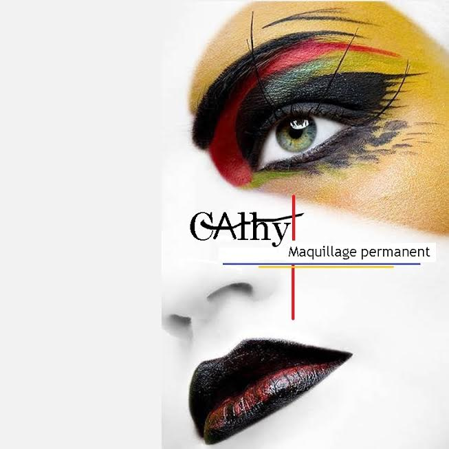

Cathy Ardois
Qui n’a jamais rêvé d’un maquillage impeccable toute la journée, qui ne coule pas et ne bave pas ? C’est possible avec le maquillage permanent, qui est un tatouage crée par l’insertion dans la surface de la peau de fines aiguilles contenant des pigments colorés. Ces injections permettent de redessiner des sourcils clairsemés, redessiner le contour des lèvres, intensifier le regard ou bien encore ajouter des grains de beauté.
Cathy ARDOIS 39 ans, j'ai fait connaissance avec le maquillage permanent en étant moi même utilisatrice et se fut une révélation.
Etant une femme active, je souhaitais être toujours bien maquillée mais sans effort, j'avais une intolérance aux produits cosmétiques, le maquillage permanent m'a changé le quotidien ! être belle tous les jours, tout le temps.
J'ai ensuite entamé une formation d'hygiène et salubrité obligatoire ainsi que des cours privés chez PUREBEAU et PIGMENTSE à Lyon.
J'utilise du matériel à usage unique pour tous les éléments afin de garantir une hygiène parfaite.
Pour le tatouage corps, j'effectue des petites pièces, je suis artiste peintre à l'origine d'ou l’intérêt artistique pour le tatouage.Diplômée des cours PIGMENTSE à Lyon.
Les soins
Maquillage semi-permanent :
- Sourcils
- Eye liner
- Densification ciliaire
- Grain de beauté
- Contour de bouche et remplissage.
- Tatouage corps
Contact
Cathy Ardois
SCI Boutières Bien-être.
.
06.27.16.17.58 pour me joindre (cliente) sur RDV les samedis
Site
.
